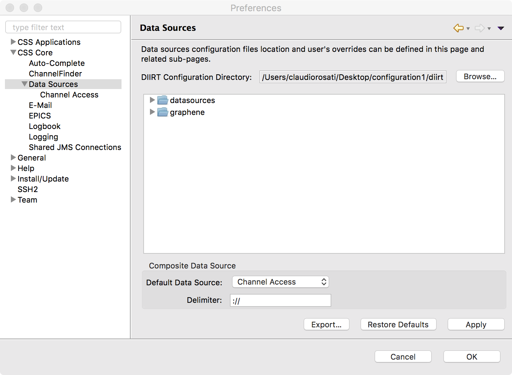
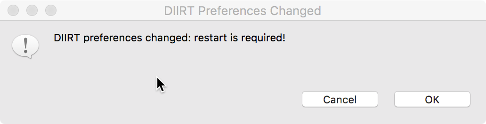
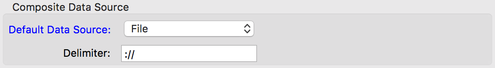
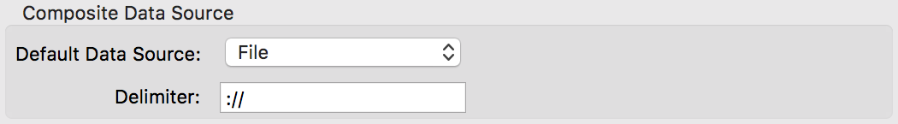

This chapter will explain the preferences used to define and configure data sources for CS-Studio.
The preference pages will allow to configure data sources. It can be found opening the Preferences dialog, and navigating to the CSS Core ⊳ Data Sources category. These pages take place of the old CSS Core ⊳ EPICS and CSS Core ⊳ Diirt preferences, allowing to configure EPICS Channel Access parameters, and other data sources available in the future.

When a preference is changed inside the Data Sources page or in one of its sub-pages, CS-Studio requires to be restarted to apply the new values. For this reason a dialog is displayed allowing to restart the application immediately, or postpone it for a later time.

The DIIRT Configuration Directory preference defines where DIIRT (the library used to talk with data sources) will find its configuration files.
If a valid configuration directory (see
Programmer's Notes) is found,
then all other preferences in this page and all the sub-pages will
have their default values set from the DIIRT configuration files.
If not, then the values in the configuration/plugin_customization.ini
file (inside the CS-Studio application's folder) are used.
When a preference is overridden inside the Composite Data Source group, or in any of the Data Sources sub-pages, the corresponding preference's caption will be painted in blue. Reverting the preference to its default value (manually or through the Restore Defaults button) will revert the caption's color to its default.

The preferences in this section control the configuration of how the different data sources are combined and made accessible to the DIIRT library.
The composite data source allows multiple data sources to be made available by breaking up the channel name into three parts:
[data-source-name][delimiter][channel-name]
It also allows to set a default data source so that channel names that do not match the pattern are forwarded to that data source.
[unmatched-channel-name] → [default-data-source][delimiter][unmatched-channel-name]
The preferences in the Composite Data Source section are listed below.

| Default Data Source |
The data source used by channel names not matching the
default name pattern, so that:
[unmatched-channel-name] → [default-data-source][delimiter][unmatched-channel-name]The possible values are: None,
Channel Access, File,
Local, PV Access,
Simulation, and System.
The default data source is None.
|
|
|---|---|---|
| Delimiter |
The delimiter used in the pattern to parse the channel name.
The default value is ://.
|
Pressing the Export… button will allow to save the current Data Sources settings as a valid configuration directory (see Programmer's Notes). A dialog will be displayed to select the directory where to the settings will be saved. A confirmation message will be shown inside the Preferences dialog.